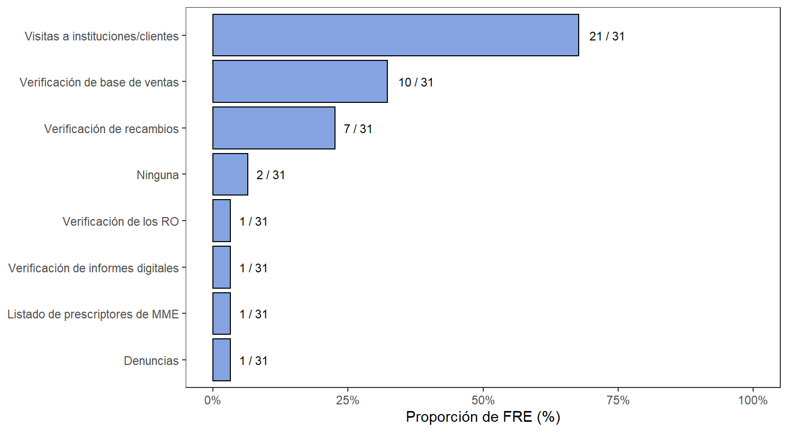

5.3 Tiempos de adquisición de recetarios
La adquisición de talonarios en el territorio nacional se recoge en la Figura 5.9, en la que se evidencia que la mínima cuantía es la modalidad que más se ejecuta, el acompañamiento a los Fondos Rotatorios permitió explicar que dicha modalidad, en la mayoría de los casos, es favorable financieramente respecto a la inversión y recaudo posterior obtenido de la venta de los recetarios oficiales, siendo además este ingreso una de las principales fuentes de financiación de varios FRE. Sin embargo, esta modalidad tiene el limitante que algunos requerimientos importantes del proponente pueden ser desconsiderados puesto que el criterio final de selección es la mínima cuantía, lo que puede poner en riesgo el cumplimiento de las especificaciones de usuario de los recetarios oficiales finalmente recibidos. De hecho, se observaron ejemplos donde debido a la falta de verificación de la experiencia del proponente, seguimiento y/o auditoria del avance de entrega, se allegaron recetarios no conformes, como prescripciones sin codificación o tintas desgastadas.
Figura 5.9: Modalidad de selección para contratos de adquisición de recetarios

En segunda posición para la adquisición de recetarios oficiales se encuentra la modalidad de licitación pública, la cual si exige demostrar tiempo de experiencia definida en la elaboración de talonarios y especificaciones de usuario como características mínimas de seguridad que se mostraran más adelante (ver Figura 5.13). Si bien no es la modalidad predominante, en comparación con el resto de las modalidades, se ha encontrado que los recetarios oficiales obtenidos mediante este tipo de contratación, tienen características más detalladas y elaboradas que reducen su posibilidad de falsificación. Entre las medidas de seguridad más observadas en los recetarios por licitación pública se encuentran el uso de tintas invisibles o fluorescentes en secciones específicas del recetario que brillan bajo la luz UV, bandas y/o filamentos de seguridad, versus las medidas de seguridad de recetarios realizados por mínima cuantía como seriales con codificaciones alfanuméricas, escudo de la gobernación respectiva y/o marcas de agua. (licitación no es exclusiva para RO,)
Respecto al tiempo que tarda la completitud del proceso de adquisición de los recetarios oficiales, figura 5.10, el proyecto permitió evidenciar que el tiempo promedio se encuentra entre 60 y 120 días (2 a 4 meses), con casos atípicos como el departamento del FRE Putumayo, el cual lleva sin concretar la compra de recetarios oficiales desde el mes de noviembre del año 2020. La principal problemática de adquisición del FRE Putumayo es debida a dificultades entre la gobernación y el proceso de licitación. Por otro lado, se observó que los departamentos que compran los talonarios por la modalidad de contratación directa, son aquellos con menores tiempos de adquisición, tiempos de aproximadamente 1 mes. Mientras que, los departamentos que compran por medio de mínima cuantía y licitación pública, tienen tiempos más variados de adquisición que pueden tardar entre 1 a 8 meses, encontrando que las demoras son debidas a los procesos que realizan los entes territoriales, tales como: la estimación de la necesidad de recetarios oficiales que dura entre 1 semana y 1 mes; la etapa precontractual que abarca los estudios previos y estudios de mercado, que tarda entre 1 y 2 meses, se aclara, entonces, que las etapas iniciales anteriormente descritas son procesos propios de los FRE, es decir, son desarrolladas por el personal encargado del FRE y los tiempos están estandarizados en cada departamento. Caso contrario a la etapa contractual, la cual puede llevar en completarse de 1 a 2 meses, o en casos particulares más de 2 meses, siendo estos tiempos estimados por los FRE, puesto que dicha etapa es llevada a cabo por las Gobernaciones y/o Secretarías departamentales, y en la mayoría de los casos se encontró que los FRE desconocen el detalle del proceso que estas llevan; y finalmente se encuentra la etapa de despacho de los recetarios, la cual puede tomar entre 1 a 3 meses en ejecutarse por parte de los contratistas, y estos tiempos son particulares de cada departamento dependiendo entre otros, del volumen de recetarios adquiridos y el nivel de especificación acordado. En este punto también es importante mencionar que el manejo y la experiencia con las herramientas de adquisición, como el programa Colombia compra Eficiente, influye en los tiempos finales.
Figura 5.10: Tiempo de demora para adquisición de recetarios

La Figura 5.11 muestra los campos de información recolectada en bases de datos por los FRE al momento de realizar la venta de un recetario oficial, la información recolectada permite conocer a quiénes (datos básicos de las entidades y prescriptores inscritos en el FRE), cuántos (unidades consumidas y su respectivo valor), cuáles (datos de identificación de los talonarios) y con qué frecuencia los talonarios se distribuyen en los respectivos departamentos. Por tanto durante la jornada de inmersión territorial, se puedo observar que los FRE utilizan dichas bases con dos propósitos principales, en primer lugar son el insumo básico para realizar estimaciones de necesidad de recetarios, control de inventarios y control en las cantidades que los compradores adquieren, al permitirles llevar un seguimiento del consumo promedio de las entidades, de hecho en varios casos, lo anterior permitió a los FRE realizar un seguimiento a posibles desvíos o anormalidades en los consumos. Por ejemplo, con el inicio de la pandemia el consumo se disparó en la mayoría de departamentos tanto de ROs como de MME, por lo que los FRE tuvieron que fortalecer el trabajo en equipo con las entidades para mitigar desabastecimientos. Y es con este segundo propósito que los FRE usan las bases de datos, al realizar un control en el manejo de talonarios, contrarrestando la información de las bases con la allegada o solicitada durante visitas, evitando así un probable fraude o una falsificación de los mismos. Por tanto, se observó que la mayoría de FRE llevan un control de información con el fin de identificar a los compradores y las cantidades adquiridas (proporciones mayores al 50%), y en segundo lugar datos de contacto, como dirección o teléfono con tan solo 25%. Por otro lado, se evidenció que la mayoría de departamentos optan por realizar seguimiento a los talonarios con el código de serial, 83%, puesto que, los seriales de cada talonario son únicos. Así mismo, se observó que dentro de la opción “Otros” correspondiente a otra información recolectada por los FRE al momento de completar la venta de ROs y con una proporción del 25%, se lleva seguimiento de: el/los consecutivos de las facturas emitidas en cada compra, registro REPS, saldo de recetarios oficiales tras la compra, o códigos de recetarios oficiales prescritos allegados para su revisión, frente a este último punto se observó que algunos FRE cierran el ciclo de control del RO, al en la misma base de datos, relacionar los RO prescritos que son devueltos para su revisión.
Figura 5.11: Proporción de FRE que diligencian campos en BD de venta de recetarios

Sumado a lo anterior, en la Figura 5.12 se muestra las distintas actividades realizadas por parte de los FRE para el seguimiento al manejo de los ROs, el acompañamiento a los FRE permitió determinar que la actividad de control más realizada, alrededor de un 70%, es las visitas a las instituciones y médicos independientes inscritos en el FRE; la dinámica principal de la visita consiste en actividades propias de I.VC., y a su vez la revisión del anexo 13 y otros informes particulares contra las copias de las prescripciones de los ROs que las entidades tengan disponibles. Estas visitas han permitido evidenciar en algunos departamentos, falencias en el uso adecuado de loa ROs, como que se encuentran prescripciones en las cuales se formulan antibióticos u otros medicamentos en conjunto con MME o solos, o se tiene casos donde se encuentran talonarios en blanco, pero con firma y sello del médico prescriptor, generando un alto riesgo de desvío en las instituciones. Otras actividades de seguimiento activo al manejo de ROs son el seguimiento a las denuncias, las cuales tienen una proporción menor al 5%.
Por tanto, se puede determinar que la mayoría de los FRE realizan actividades de seguimiento pasivas (juntas alcanzan una proporción de 50%), como la revisión de anormalidades en las bases de ventas, como se mencionó previamente, la verificación física de los ROs, la verificación de los informes digitales, anexos allegados, puntos que serán ampliados más adelante, o la verificación de recambios con un 25% de proporción, la cual consiste en autorizar la venta a las entidades, solo cuando se alleguen talonarios prescritos, es decir, si la entidad o medico prescriptor allega 2 talonarios previamente vendidos y que ya hayan sido prescritos, se pueden vender 2 talonarios nuevos; esta tendencia se puede deber a la reducida capacidad de recurso humano con el que cuentan los FRE, respecto al número de entidades y médicos prescriptores en cada departamento. De hecho, el acompañamiento permitió evidenciar que el 15% de los FRE no realizan ningún tipo de actividad de seguimiento al uso de los ROs, tan solo cumpliendo con la presentación de informes exigidos por la normativa vigente.
Figura 5.12: Actividades realizadas por el FRE para el seguimiento del uso de recetarios
